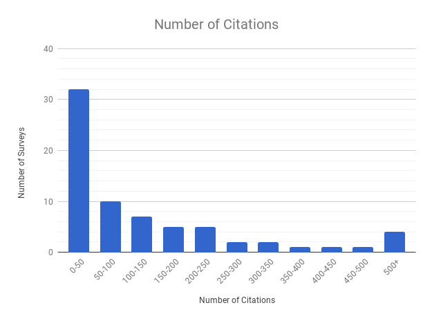

Across the 70 surveys, Facebook was by far the most popular subject of study. Many surveys dealt with "SNS"/"OSNs" in general. Experimental survey designs sometimes created their own fictitious websites/apps in order to better control the conditions, or perhaps to avoid controversy. A few surveys discussed "online privacy" more generally, including social networks. In the early 2000s, before the rise of SNS, e-commerce was a popular space to study online privacy. Google+ and chatrooms/forums were briefly interesting to researchers, with two surveys each in this dataset. Twitter, LinkedIn, MySpace, Runet (Vkontakte et al), and ICQ messenger are all represented in this dataset with one survey each.

The surveys in this dataset asked about people's perceptions of privacy concern and risk, and their level of trust in the platform and in their social connections. They asked about people's behavior with regard to control, sharing, disclosure, and changing their privacy settings. Finally, they asked about knowledge and awareness of privacy risks, tracking, and other legal/social/technical aspects of privacy.
In terms of research design, most surveys were correlational and confirmatory, stating and testing specified hypotheses. Some gathered descriptive statistics about populations and only reported percentages. An equal number performed correlation analysis on their data, but did not state hypotheses in advance. A handful used an experiment design where they randomly assigned participants to conditions. One survey made longitudinal comparisons between privacy in the past and present, and another supplemented its experiment design with an existing dataset.

The US was the most represented country. Many European countries were also represented. Russia, Morocco, Japan, and India were represented with the goal of understanding the culture of those countries.

To get large sample sizes, many surveys used convenience samples of local college students. Others used crowdsourcing platforms such as Amazon Mechanical Turk. Still others recruited respondents directly off the platform they were interested in. A few took steps to get nationally representative samples, such as using phone survey agencies or using existing datasets such as Pew survey data.
Most surveys had under 1000 respondents. 375-500 was the most common sample size. Those that had a very large number typically were performing secondary analysis on a large dataset such as a Pew survey.

Most papers were relatively new and had few citations. There was a modest correlation between publication date and number of citations. A handful of papers had a very large number of citations. The most-cited surveys were "Imagined Communities: Awareness, Information Sharing, and Privacy on the Facebook" (Acquisti & Gross, 2006) with over 2000 citations, "Trust and privacy concern within social networking sites: A comparison of Facebook and MySpace" (Dwyer et al, 2007) and "Facebook and Online Privacy: Attitudes, Behaviors, and Unintended Consequences" (Debatin et al, 2009).
